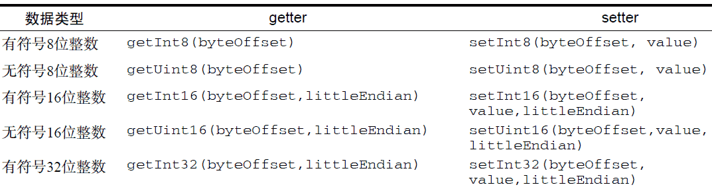
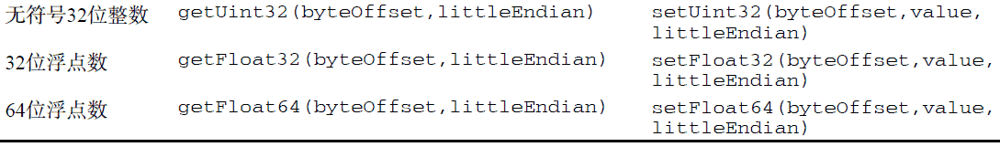

var buffer = new ArrayBuffer(20);创建了ArrayBuffer 对象后，能够通过该对象获得的信息只有它包含的字节数，方法是访问其byteLength 属性：
var bytes = buffer.byteLength;虽然ArrayBuffer 对象本身没有多少可说的，但对WebGL 而言，使用它是极其重要的。而且，在涉及视图的时候，你才会发现它原来还是很有意思的。
//基于整个缓冲器创建一个新视图 var view = new DataView(buffer); //创建一个开始于字节9 的新视图 var view = new DataView(buffer, 9); //创建一个从字节9 开始到字节18 的新视图 var view = new DataView(buffer, 9, 10); 实例化之后，DataView 对象会把字节偏移量以及字节长度信息分别保存在byteOffset 和byteLength 属性中。 alert(view.byteOffset); alert(view.byteLength);通过这两个属性可以在以后方便地了解视图的状态。另外，通过其buffer 属性也可以取得数组缓冲器。


所有这些方法的第一个参数都是一个字节偏移量，表示要从哪个字节开始读取或写入。不要忘了，要保存有些数据类型的数据，可能需要不止1B。比如，无符号8 位整数要用1B，而32 位浮点数则要用4B。使用DataView，就需要你自己来管理这些细节，即要明确知道自己的数据需要多少字节，并选择正确的读写方法。例如：var buffer = new ArrayBuffer(20), view = new DataView(buffer), value; view.setUint16(0, 25); view.setUint16(2, 50); //不能从字节1 开始，因为16 位整数要用2B value = view.getUint16(0);运行一下
var buffer = new ArrayBuffer(20), view = new DataView(buffer), value; view.setUint16(0, 25); value = view.getInt8(0); alert(value); //0运行一下
//创建一个新数组，使用整个缓冲器 var int8s = new Int8Array(buffer); //只使用从字节9 开始的缓冲器 var int16s = new Int16Array(buffer, 9); //只使用从字节9 到字节18 的缓冲器 var uint16s = new Uint16Array(buffer, 9, 10);能够指定缓冲器中可用的字节段，意味着能在同一个缓冲器中保存不同类型的数值。比如，下面的代码就是在缓冲器的开头保存8 位整数，而在其他字节中保存16 位整数。
//使用缓冲器的一部分保存8 位整数，另一部分保存16 位整数 var int8s = new Int8Array(buffer, 0, 10); var uint16s = new Uint16Array(buffer, 11, 10);每个视图构造函数都有一个名为BYTES_PER_ELEMENT 的属性，表示类型化数组的每个元素需要多少字节。因此，Uint8Array.BYTES_PER_ELEMENT 就是1，而Float32Array.BYTES_PER_ELEMENT则为4。可以利用这个属性来辅助初始化。
//需要10 个元素空间 var int8s = new Int8Array(buffer, 0, 10 * Int8Array.BYTES_PER_ELEMENT); //需要5 个元素空间 var uint16s = new Uint16Array(buffer, int8s.byteOffset + int8s.byteLength, 5 * Uint16Array.BYTES_PER_ELEMENT);以上代码基于同一个数组缓冲器创建了两个视图。缓冲器的前10B 用于保存8 位整数，而其他字节用于保存无符号16 位整数。在初始化Uint16Array 的时候，使用了Int8Array 的byteOffset 和byteLength 属性，以确保uint16s 开始于8 位数据之后。
//创建一个数组保存10 个8 位整数（10 字节） var int8s = new Int8Array(10); //创建一个数组保存10 个16 位整数（20 字节） var int16s = new Int16Array(10);另外，也可以把常规数组转换为类型化视图，只要把常规数组传入类型化视图的构造函数即可：
//创建一个数组保存5 个8 位整数（10 字节） var int8s = new Int8Array([10, 20, 30, 40, 50]);这是用默认值来初始化类型化视图的最佳方式，也是WebGL 项目中最常用的方式。
for (var i=0, len=int8s.length; i < len; i++){
console.log("Value at position " + i + " is " + int8s[i]);
}
当然，也可以使用方括号语法为类型化视图的元素赋值。如果为相应元素指定的字节数放不下相应的值，则实际保存的值是最大可能值的模。例如，无符号16 位整数所能表示的最大数值是65535，如果你想保存65536，那实际保存的值是0；如果你想保存65537，那实际保存的值是1，依此类推。var uint16s = new Uint16Array(10); uint16s[0] = 65537; alert(uint16s[0]); //1数据类型不匹配时不会抛出错误，所以你必须自己保证所赋的值不会超过相应元素的字节限制。类型化视图还有一个方法，即subarray()，使用这个方法可以基于底层数组缓冲器的子集创建一个新视图。这个方法接收两个参数：开始元素的索引和可选的结束元素的索引。返回的类型与调用该方法的视图类型相同。例如：
var uint16s = new Uint16Array(10), sub = uint16s.subarray(2, 5);在以上代码中，sub 也是Uint16Array 的一个实例，而且底层与uint16s 都基于同一个ArrayBuffer。通过大视图创建小视图的主要好处就是，在操作大数组中的一部分元素时，无需担心意外修改了其他元素。类型化数组是WebGL 项目中执行各种操作的重要基础。